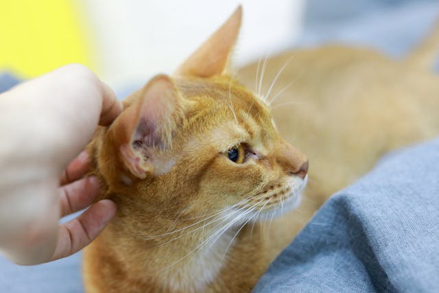
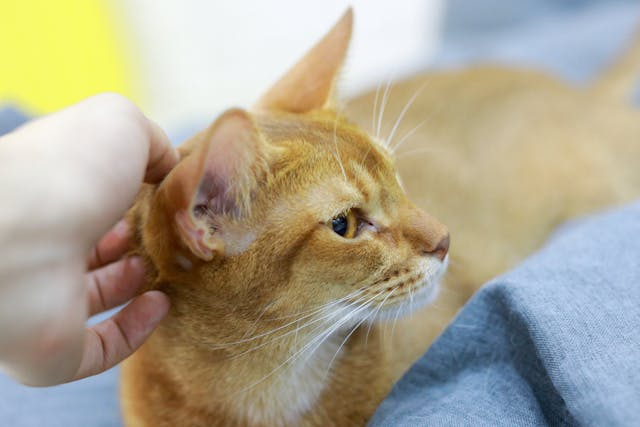

A ONG Quatro Patas
A Quatro Patas é uma ONG, sem fíns lucrativos. Fundada em 2025, a partir de um grupo de pessoas que lutam em prol do bem estar dos animais, a Quatro Aptas atua principalmente no resgate de animais em situação de risco e feridos. Entre cães e gatos, nós recuperamos, tratamos e alimentamos para que assim ganhem um novo lar por uma adoção.
A ONG fica localizada em Santo André/SP. Há atendimento veterinário, fisioterapeutas e adestradores para casos psicológicos.
 

Contato com a Quatro Patas
Email: contato@ongquatropatas.org.com
Telefone: (11)9999-9999
Endereço: Rua Cão Amigo, 123 - Santo André/SP